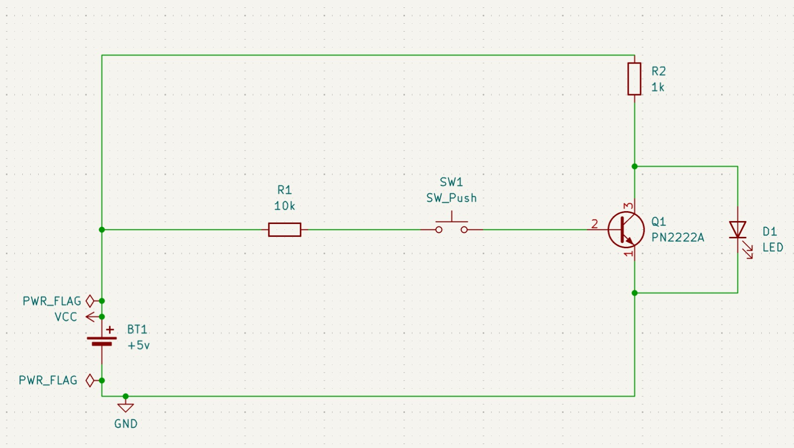

The invention of the transistor may be the most important invention of the 20th century. - Gordon Moore
Starting from this section of my notepad on building a computer I can align each section with the Nand to Tetris Course. Actually I am using the book The Elements of Computing Systems by the same professors.
Progress: Completed Project 1 from the book. All material updated on my github here
Some of the combinational logic gates I have built are documented below.
Also called the inverter simply converts a 0 to 1 and a 1 to 0.
| IN | NOT |
|---|---|
| 0 | 1 |
| 1 | 0 |

The truth table is below.
| A | B | AND |
|---|---|---|
| 0 | 0 | 0 |
| 0 | 1 | 0 |
| 1 | 0 | 0 |
| 1 | 1 | 1 |
The truth table is below.
| A | B | OR |
|---|---|---|
| 0 | 0 | 0 |
| 0 | 1 | 1 |
| 1 | 0 | 1 |
| 1 | 1 | 1 |
The truth table is below.
| A | B | NOR |
|---|---|---|
| 0 | 0 | 1 |
| 0 | 1 | 0 |
| 1 | 0 | 0 |
| 1 | 1 | 0 |
The truth table is below.
| A | B | NAND |
|---|---|---|
| 0 | 0 | 1 |
| 0 | 1 | 1 |
| 1 | 0 | 1 |
| 1 | 1 | 0 |
The truth table is below. I used NAND gates to build the XOR gate.
| A | B | XOR |
|---|---|---|
| 0 | 0 | 0 |
| 0 | 1 | 1 |
| 1 | 0 | 1 |
| 1 | 1 | 0 |
Last Updated: 4 Oct 2026